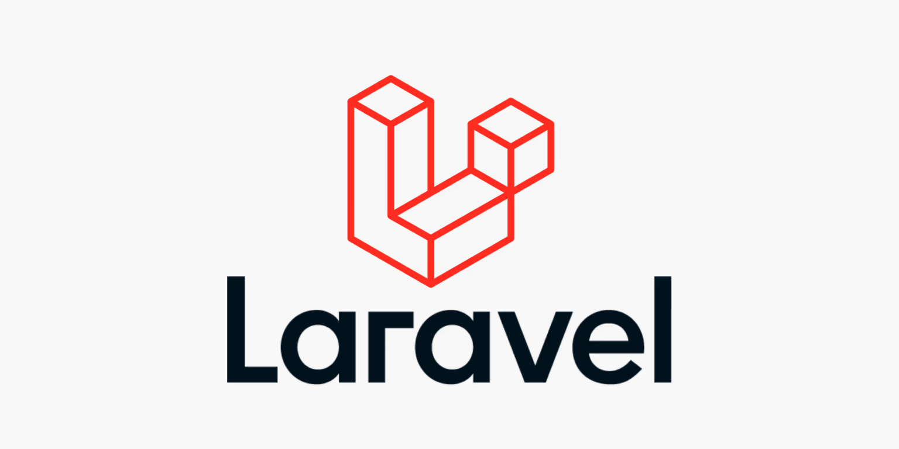
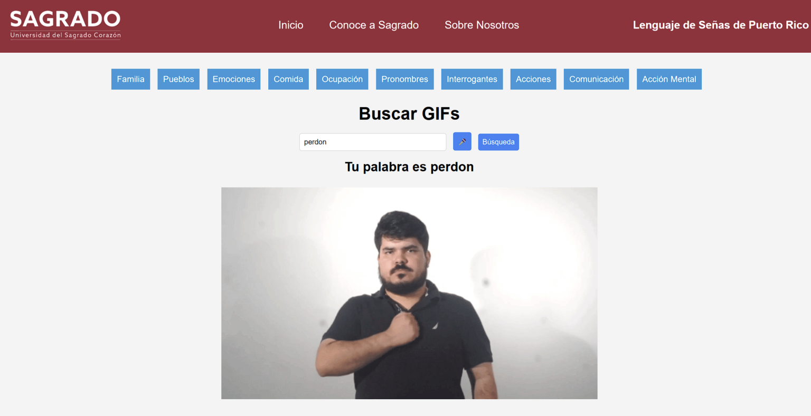

Collaboration Inspires: The Journey of Building My First Project of the Semester
Collaboration can lead to unexpected and inspiring results. I recently experienced this when a casual conversation with a classmate sparked an idea; it was the kind of discussion that reminded me of the power of working with like-minded individuals. That conversation inspired me to create a humble little web app—simple in design but significant in its impact on my learning and growth.
The Spark of an Idea
To provide some context, I’m currently enrolled in a mobile app design class, and in this class, we’re working on designing a Puerto Rico Sign Language dictionary. This isn’t the first time we’ve tackled such a project; we started working on it a year ago, and now we’re revisiting it with new goals in mind, like adding more signs and implementing voice search.
However, during a class discussion, an idea popped into my head: "What if I made the same thing, but as a web app?" As someone who has been interning at a software consulting company for about a year, I saw this as a perfect opportunity to test my skills and challenge myself. The idea was simple enough that I could complete it in a weekend, but interesting enough to keep me motivated to see it through. And so, I sat down and started working.
The First Attempt: Laravel
Initially, I built the web app using Laravel, one of the most popular PHP frameworks. Laravel is amazing for creating CRUD applications and would be ideal if this were to evolve into a full-fledged dictionary with complex relational features. However, for my project—a simple app that just searches a word and displays a GIF—it quickly became apparent that Laravel was overkill.
I’m very accustomed to Laravel’s Model-View-Controller (MVC) software design pattern, so I managed to build the app within a few hours. But the end result suffered from the same fate that many toy projects do: it was destined for the garbage bin. While it served as a proof of concept, it didn’t feel practical or accessible enough to showcase outside a local development environment.
Preparing for the Open House
Soon after, I learned about the upcoming Open House at my university. As the president of the Informatics Association, I knew I would be participating. This year’s Open House was significant because our computing students had just received a brand-new lab—something we rarely get in an institution that prioritizes other departments like communications.
The professors and students came together to brainstorm ideas for the event to showcase what our program could achieve. Once again, collaboration with like-minded individuals became a cornerstone of our efforts. We decided that our projects needed to inspire, to spark interest in prospective students and demonstrate the potential of computing.
But for me, simply reusing my Laravel prototype wasn’t enough. It needed to be accessible and feel more like a refined app—not something that was overly reliant on hosting or locked behind a local network. This led me to rethink my choices and take another approach.
A Fresh Start: Enter JavaScript
After some frustration with the limitations of my Laravel setup, I realized something simple yet profound: Laravel was unnecessarily complicated for what I was building. At its core, my web app was just a GIF-based dictionary with no external dependencies, no complex data storage, and no need for a fully-fledged backend framework. This realization led me to pivot and rebuild the app using JavaScript.
Now, here’s the thing—I have a love-hate relationship with JavaScript. On one hand, it’s incredibly versatile and the native language of the browser. On the other hand, its ecosystem can feel disjointed, messy, and confusing, especially when modular frameworks are involved. Nevertheless, I knew JavaScript made sense given my requirements for the project.
This shift brought me to a new and unexpected learning experience. While I was already familiar with concepts like DOM manipulation and EventListeners, I had never fully explored their potential. Diving into JavaScript forced me to get my hands dirty in ways I hadn't before. It was a breath of fresh air to work with something so lightweight and intuitive for the frontend.
The Final Product: A Simple JavaScript Web App
With JavaScript, I pared my app down to its essential functionality and rebuilt it without the unnecessary clutter of a backend framework. The experience of creating the app was both challenging and rewarding—it pushed me to better understand JavaScript and allowed me to experiment with new techniques in a practical, hands-on way.
The project became more than just an app; it turned into a collaborative effort as my peers and professors tested the app, spotted bugs, and suggested improvements. This iterative feedback loop gave me a sense of ownership over what I was building, while also underscoring the importance of teamwork in the development process.
"Collaboration inspires, and this project is proof."
The app itself is still simple—it’s not the next Uber or Candy Crush—but it serves its purpose. It’s a basic dictionary built by students, for students. Even the GIFs in the app feature students signing the words.
Lessons Learned and Moving Forward
Through this project, I’ve learned several key lessons. One of the most important is the value of knowing when to let go. My little web app isn’t meant to be a commercial success; it’s a stepping stone, one of many projects that I hope to tackle this semester. It taught me something new, motivated me to explore new tools, and gave me a sense of accomplishment—but now it’s time to move on.
As I continue my journey, I look forward to all the other ideas and opportunities ahead. Each project is a chance to learn, grow, and collaborate with like-minded individuals. And who knows? The next conversation or class discussion might just spark the idea for my next big thing.
This is a test of the text entry of this page.